Computação Quântica#
A Computação Quântica é um novo paradigma de computação em que utilizam-se sistemas quânticos – os qubits, análogos dos bits clássicos – para se realizar processamento de informação. Lançam-se mão de alguns recursos não existentes na Computação Clássica, como superposição e emaranhamento.
Há uma variedade de modelos de Computação Quântica, dentre os quais pode-se citar:
Computação Quântica de Circuitos – computação realizada com portas lógicas quânticas, análogas às portas lógicas dos sistemas digitais clássicos;
Computação Quântica Adiabática – o sistema é preparado no estado fundamental e sofre a ação de um hamiltoniano que depende continuamente do tempo e que é projetado de forma que o estado fundamental, após a aplicação do hamiltoniano, contenha a solução do problema codificada
Máquina de Turing Quântica – uma versão quântica da Máquina de Turing Clássica;
Caminhada Aleatória Quântica – versão quântica da caminhada aleatória clássica; é possível realizar computação quântica universal com esse modelo de computação.
O presente trabalho aborda apenas a Computação Quântica de Circuitos.
Computação quântica de circuitos#
Este modelo de Computação Quântica guarda analogia com a Computação Clássica com Portas Lógicas, apresentada no início do artigo. A informação é codificada em qubits, e o processamento é feito por evolução temporal do sistema segundo operações unitárias.
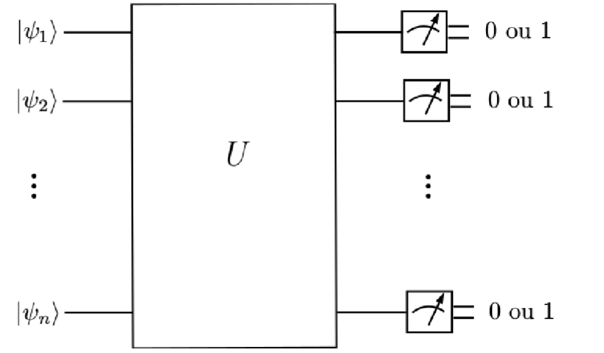
Esquema geral de um computador quântico no modelo de circuitos. Os qubits são preparados em estados iniciais e são submetidos a operações unitárias simbolizadas pela caixa de rótulo \(U\). Após a sequência de operações, os qubits são lidos (ocorre a medição dos qubits na base computacional), fornecendo uma sequência de bits clássicos com o resultado da computação
Número de entradas e saídas
Os circuitos quânticos devem ter o mesmo número de entradas e saídas, pois qubits não são introduzidos ou removidos durante o processamento e as portas lógicas quânticas são operadores, o que significa que preservam o número de qubits em que atuam. Diferentemente do que ocorre com os circuitos clássicos, nos quais há portas com diferentes números de bits à entrada e à saída (como as portas AND e NOT, por exemplo).
Reversibilidade da Computação Quântica
Outra diferença é os circuitos quânticos são essencialmente \emph{reversíveis}, ou seja, existe um circuito quântico inverso que consegue retornar as entradas originais do circuito a partir das saídas do mesmo. Isso ocorre porque o processamento se dá por operadores unitários, que são reversíveis, com inversos também dados por operadores unitários. Apesar de a maior parte da Computação Quântica ser reversível, há uma etapa irreversível: a medição dos qubits.
Nos circuitos clássicos, a maioria das portas lógicas não são reversíveis. A porta AND, por exemplo, fornece resultado 1 se ambas as entradas forem 1 e fornece 0 caso contrário; no caso de a saída ser 0, não sabemos qual/quais das entradas é 0.
Não há um impedimento absoluto para a Computação Clássica ser reversível. De fato, há investigações relacionadas a circuitos clássicos reversíveis, constituídos apenas por portas lógicas reversíveis.
Há uma expectativa de que a computação reversível seja mais eficiente em termos energéticos que a computação irreversível. Isso se deve ao \emph{princípio de Landauer}, que diz que o apagamento de 1 bit de informação está associado a uma dissipação de energia para o ambiente de, no mínimo, \(kT \ln 2\) .Em tese, se forem evitados os apagamentos de informação, a computação poderia ser feita sem gasto energético apreciável.
O qubit#
Descrição Matemática do Qubit#
O qubit é um sistema físico que pode ser descrito por um espaço de Hilbert de dimensão 2. Os estados da base canônica são rotulados por \(\ket{0}\) e \(\ket{1}\), e um estado geral para o qubit é o vetor unitário
em que \(|a|^2 + |b|^2 = 1\) e \(a,b \in \mathbb{C}\).
Fase Relativa e Fase Global#
Fase Global#
Chama-se fase global uma fase complexa multiplicando o estado de um qubit: \(e^{i\alpha}\ket{\psi}\). Dois estados \(\ket{\psi_1}\) e \(\ket{\psi_2} = e^{i\alpha}\ket{\psi_1}\), iguais a menos de uma fase global, não podem ser distinguidos fisicamente. De fato, dado um observável \(A = \sum_k a_k P_k\), a probabilidade de o resultado de uma medida ser \(a_k\), nos dois casos, é igual:
A evolução temporal nos dois estados também é idêntica, a menos do fator \(e^{i\alpha}\), devido à linearidade dos operadores de evolução:
e uma subsequente medição não conseguiria distinguir esses dois estados que diferem apenas por uma fase global. Na formação de um sistema composto, os vetores \(\ket{\psi_1}\) e \(\ket{\psi_2} = e^{i\alpha}\ket{\psi}\) produzem resultados idênticos, a menos da fase global \(\alpha\), dada a multilinearidade do produto tensorial:
Do mesmo modo, uma medida posterior não conseguiria distinguir esses dois estados.
Dessa forma, a fase global não tem relevância física, e um sistema descrito por um vetor de estado \(\ket{\psi}\) também pode ser descrito pelo vetor \(e^{i\alpha}\ket{\psi}\).
Fase Relativa#
A fase relativa em um qubit é a diferença de fase entre os coeficientes que multiplicam o \(\ket{1}\). Por exemplo, os vetores
têm mesmo coeficiente multiplicando \(\ket{0}\) e diferem apenas por um fator \(-1 = e^{i \pi}\) multiplicando \(\ket{1}\), isto é, por uma fase relativa de \(\pi\).
De forma geral, os estados
diferem por fase relativa \(\varphi\). Esses estados apresentam mesmas probabilidades em uma medida na base computacional:
no entanto, em bases diferentes, podem apresentar probabilidades diferentes. Exemplificando, os estados \(\ket{+}\) e \(\ket{-}\) diferem por uma fase relativa, no entanto formam uma base. E a medida nessa base fornece resultados distintos. A evolução por transformações unitárias também apresenta resultados diferentes. Por exemplo, a aplicação do operador unitário \(H\) fornece \(H\ket{+} = \ket{0}\) e \(H\ket{-} = \ket{1}\).
Assim, ao contrário da fase global, a fase relativa apresenta relevância física.
Representação de um Qubit na Esfera de Bloch#
O estado \(\ket{\psi} = a \ket{0} + b\ket{1}\) de um qubit pode ser reescrito, a menos de uma fase global, como
Pode-se multiplicar o estado por uma fase global para que o termo multiplicando \(\ket{0}\) seja real e positivo. Fazendo-se essa identificação em relação à fase global, tem-se o estado de um qubit descrito por dois parâmetros \(\theta\) e \(\varphi\). Utilizando esses dois parâmetros no sistema de coordenadas esféricas, pode-se corresponder os estados de um qubit com os pontos na superfície de uma esfera de raio unitário, a chamada Esfera de Bloch.
Pontos na Esfera de Bloch#
Os polos norte da esfera corresponde ao estado \(\ket{0}\) e o polo sul, ao \(\ket{1}\). No equador, situam-se os estados da forma \(\frac{1}{\sqrt{2}} \ket{0} + \frac{e^{i\varphi}}{\sqrt{2}} \ket{1}\), isto é, superposições dos estados \(\ket{0}\) e \(\ket{1}\) com o mesmo peso e com alguma fase relativa.
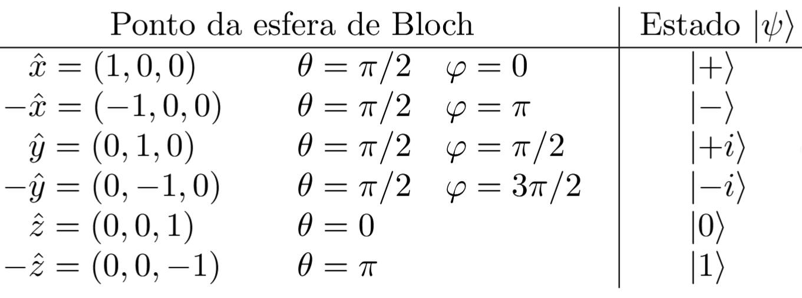
Observe que os vetores da base \(\mathcal{X}\) correspondem às intersecções da esfera com o eixo \(x\). De forma similar, isso vale para as bases \(\mathcal{Y}\) e \(\mathcal{Z}\), que correspondem às intersecções da esfera com os eixos \(y\) e \(z\), respectivamente.
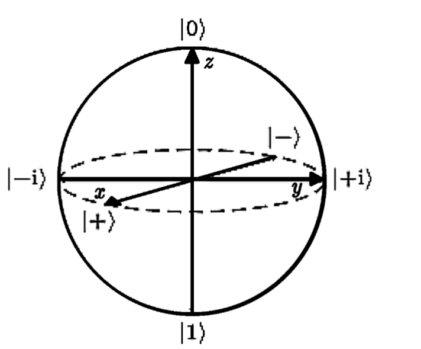
Projeções nos eixos coordenados#
As projeções nos eixos \(x\), \(y\) e \(x\) de um ponto \(\vec{r}\) na superfície da esfera de Bloch são dadas pelas coordenadas esféricas:
Essas projeções correspondem aos valores esperados dos operadores hermitianos \(X\), \(Y\) e \(Z\) de Pauli:
Notação de Circuitos#
Os detalhes da notação utilizada para representar circuitos quânticos serão vistos nesta seção.
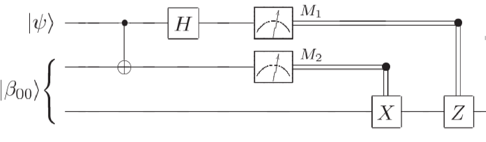 Entradas e saídas
O circuito deve conter o mesmo número de entradas e saídas (às vezes podem estar omitidas quando não utilizadas). Cada qubit é representado por uma linha horizontal, e linhas duplas representam bits clássicos. Pode-se pôr rótulos nos qubits para indicar em que estado se encontram na entrada.
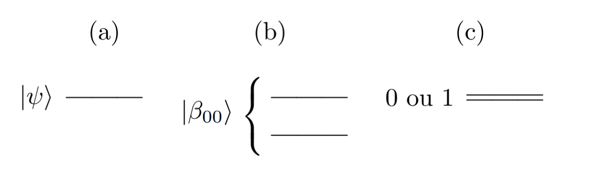
Os qubits de entrada podem se encontrar em estados \(\ket{0}\), \(\ket{1}\) ou em superposições desses estados. Também podem encontrar-se em estados emaranhados, não possíveis de se exprimir como produto tensorial de estados de 1 qubit.
Sequência de operações#
A passagem do tempo, e portanto a sequência de operações, é representada da esquerda para a direita. Ocasionalmente pode-se representar o circuito na forma vertical, e a passagem do tempo é representada de cima para baixo.
Símbolos para Portas Lógicas Quânticas#
As portas lógicas quânticas são representadas por caixas contendo o mesmo número de entradas e saídas. As portas lógicas controladas são portas lógicas de mais de 1 qubit em que pelo menos um dos qubits age como controle; o qubit de controle é representado por um círculo (mais detalhes serão vistos posteriormente).
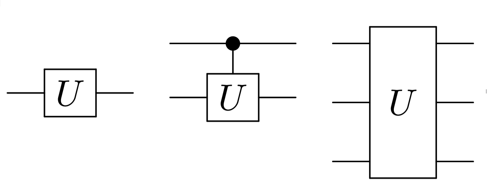
Exemplos de portas lógicas quânticas. (1) Porta lógica de 1 qubit. (2) Porta lógica controlada de 2 qubits. (3) Porta lógica de 3 qubits.
Medições de qubits#
As medições são as únicas operações potencialmente irreversíveis de um circuito quântico. Em geral são realizadas na base computacional \(\ket{0}\) e \(\ket{1}\). A notação para medições é ilustrada abaixo, em que, novamente, fica implícito que a base de medidas é a computacional. Após a medição na base computacional, o resultado é um bit clássico.
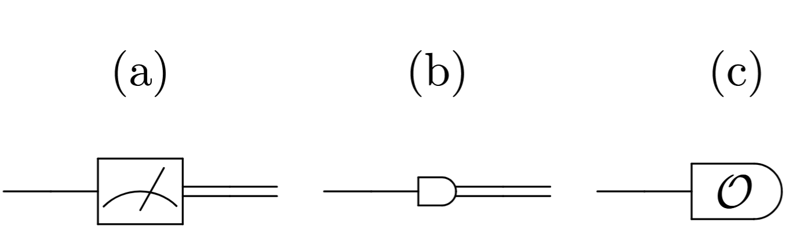
Notações possíveis para medição de qubits. Após a medição na base canônica, o resultado é um cbit. (1) e (2) Medição na base canônica. (3) Medição de um observável \(\mathcal{O}\) especificado.
Portas Lógicas Quânticas#
As portas lógicas quânticas são operações unitárias aplicadas em um ou mais qubits. Nesta seção, essas portas lógicas são apresentadas em detalhes.
Portas Lógicas de 1 Qubit#
Estas portas lógicas atuam em 1 qubit apenas. São descritas por matrizes unitárias \(2 \times 2\). As portas lógicas apresentadas nesse tópico são as portas \(X\), \(Y\) e \(Z\) de Pauli (também denotadas por \(\sigma_x\), \(\sigma_y\) e \(\sigma_z\), respectivamente), a porta \(H\) de Hadamard, a porta de fase ou porta \(S\) e a porta \(\tfrac{\pi}{8}\) ou porta \(T\).
Porta X de Pauli ou NOT quântico
A porta \(X\) de Pauli é a operação unitária de 1 qubit que, na base computacional, é representada pela matriz de Pauli \(X = \sigma_x\). Algumas informações dessa porta estão resumidas na figura abaixo.
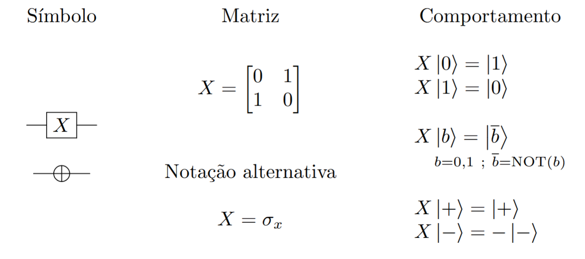
Porta Y de Pauli
A porta \(Y\) de Pauli é a operação unitária de 1 qubit que, na base computacional, é representada pela matriz de Pauli \(Y = \sigma_y\). Algumas informações dessa porta estão dispostas abaixo.
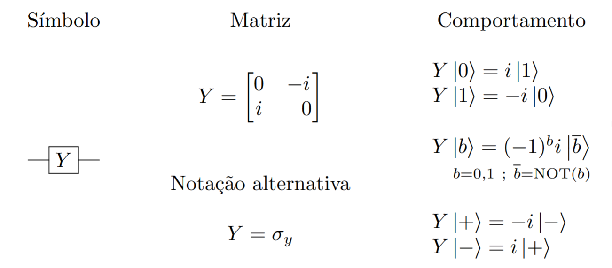
Porta Z de Pauli
A porta \(Z\) de Pauli é a operação unitária de 1 qubit que é representada na base computacional pela matriz de Pauli \(Z = \sigma_z\). Essa porta introduz uma fase relativa de \(\pi\), o que corresponde a multiplicar o \(\ket{1}\) por \(-1 = e^{i\pi}\), como se pode observar no quadro a seguir.
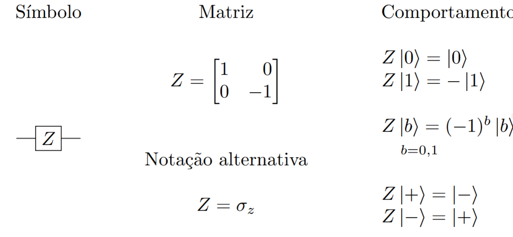
Porta Hadamard
A porta de Hadamard é uma operação unitária de 1 qubit representada na base computacional pela matriz de Hadamard \(H\). Essa matriz, definida abaixo, também realiza mudança de base de \(\mathcal{I} = \big\lbrace \ket{0}, \ket{1}\big\rbrace\) para \(\mathcal{X} = \big\lbrace \ket{+}, \ket{-}\big\rbrace\) e vice-versa
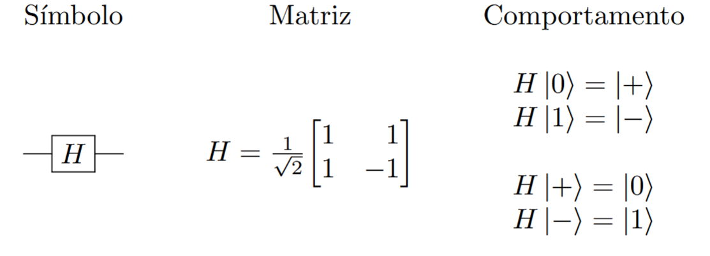
Porta de Fase ou Porta S
A porta \(S\) introduz uma fase relativa de \(\frac{\pi}{2}\) no qubit em que atua, levando um estado \(a \ket{0} + b \ket{1}\) em um estado \(a \ket{0} + i b \ket{1}\), já que \(i = e^{i\frac{\pi}{2}}\). Os detalhes pertinentes a essa porta lógica estão dispostos abaixo.
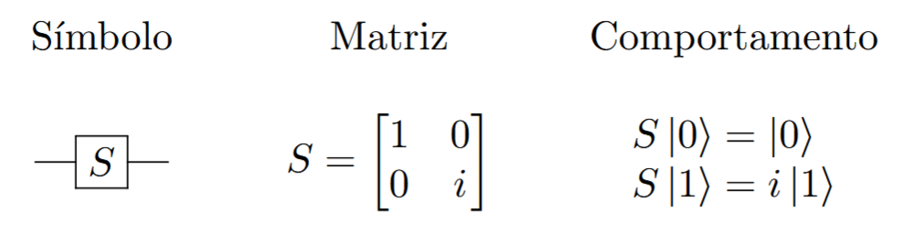
Porta T ou Porta \(\frac{\pi}{8}\)
A porta \(T\), também conhecida como porta \(\frac{\pi}{8}\), é uma porta lógica que introduz uma fase relativa de \(\frac{\pi}{4}\), levando um estado \(a\ket{0} + b \ket{1}\) em \(a\ket{0} + e^{i\frac{\pi}{4}} b \ket{1}\).
O nome \(\frac{\pi}{8}\) dessa porta se deve ao fato de poder ser escrita na forma
Isso significa que, a menos de uma fase global, essa operação realiza uma mudança de fase de \(+\frac{\pi}{8}\) no estado \(\ket{0}\) e de \(-\frac{\pi}{8}\) no estado \(\ket{1}\).
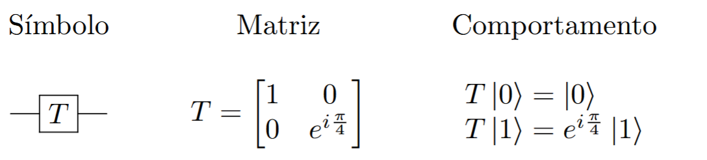
Porta de Fase \(\theta\)
A porta de fase pode ser generalizada para uma fase arbitrária \(\theta\). Nesse caso, a aplicação dessa porta, denotada por \(S(\theta)\) leva um estado \(a\ket{0} + b\ket{1}\) em \(a\ket{0} + e^{i\theta} b\ket{1}\). A matriz que realiza isso é mostrada a seguir.
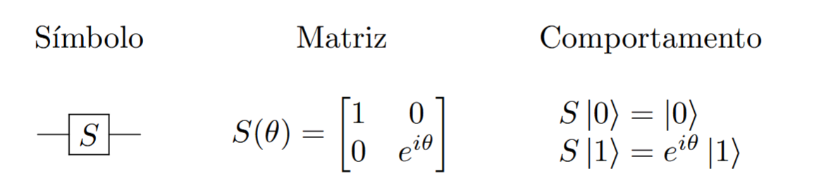
Como casos particulares, tem-se
Portas Lógicas de 2 Qubits#
As portas lógicas de 2 qubits são realizadas por matrizes unitárias \(4\times 4\). As principais operações são CNOT (NOT controlada), \(Z\) controlada e SWAP, descritas abaixo.
Porta CNOT
A porta CNOT, ou NOT controlada, é uma porta de 2 qubits em que um deles exerce a função de controle e o outro, a de alvo. Em geral, quando não especificado, o primeiro qubit é o controle e o segundo, o alvo. Se o qubit de controle for \(\ket{0}\), nada acontece com o qubit alvo. Se o controle for \(\ket{1}\), a porta NOT quântica (porta \(X\) de Pauli) é aplicada ao alvo:
Esse comportamento é análogo à entrada ``enable’’ em circuitos digitais clássicos, que permite a ação do circuito se está habilitada em 1, ou nada acontece, se o enable é 0. A novidade na Computação Quântica é que a entrada de controle é um qubit e pode, portanto, se encontrar em uma superposição de estados, como \(\frac{\ket{0}+\ket{1}}{\sqrt{2}}\). A aplicação da porta CNOT, em casos como esse, ficaria
A porta CNOT tem suas informações resumidas no quadro abaixo.
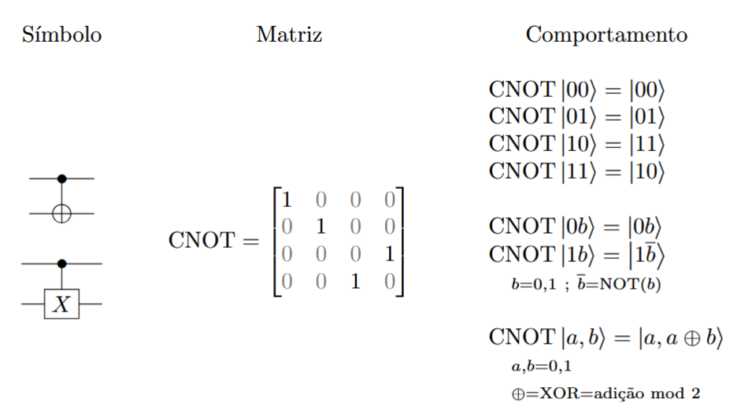
A porta CNOT também pode aparecer com o controle no segundo qubit e alvo no primeiro qubit. Nesse caso, podem ser usados índices no símbolo CNOT para especificar o controle e o alvo em situações mais específicas. Por exemplo:
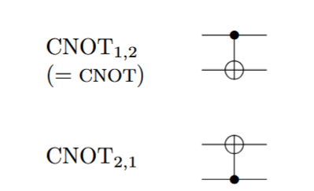
Uma notação semelhante pode ser usada em outras portas controladas para especificar o qubit de controle e o de alvo.
Porta Z Controlada
A porta \(Z\) controlada também atua em 2 qubits, um deles com função de controle e o outro, de alvo. Se o controle (o primeiro qubit) for \(\ket{0}\), o alvo (segundo qubit) não se modifica, e se o controle for \(\ket{1}\), aplica-se uma porta \(Z\) de Pauli ao alvo, como se pode ver no quadro a seguir. Se os qubits estiverem em superposição, basta usar a linearidade do operador CZ e atuar em cada estado da base computacional isoladamente:
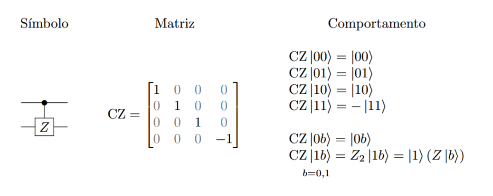
Porta SWAP
A porta SWAP troca o estado de dois qubits, levando \(\ket{\phi}\ket{\psi}\) em \(\ket{\psi}\ket{\phi}\).
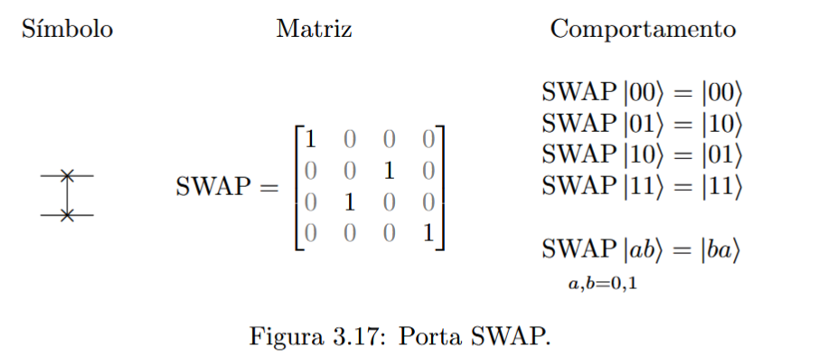
Portas Lógicas de 3 Qubits#
As principais operações em 3 qubits são as portas Toffoli, também conhecida por CCNOT (CNOT controlada), e Fredkin, ou CSWAP (SWAP controlada).
Porta Toffoli ou CCNOT
A porta Toffoli é uma operação linear que envolve 3 qubits. Dois deles funcionam como controle e um, como alvo. O alvo só é modificado (pela aplicação da porta \(X\)) se o estado dos dois controles for \(\ket{1}\ket{1}\).
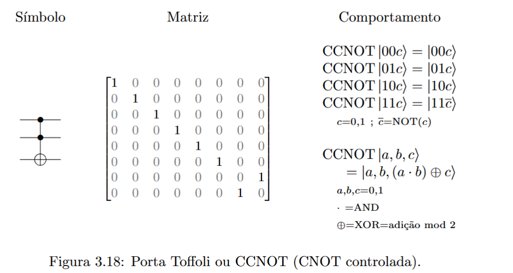
Novamente, quando não houver outra indicação, os qubits de controle são o primeiro e o segundo, e o alvo é o terceiro qubit. Pode-se especificar os qubits de controle e de alvo por meio de índices, como por exemplo:
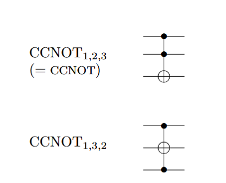
Porta Fredkin ou CSWAP
A porta de Fredkin possui um qubit de controle e dois alvos. Se o controle for \(\ket{1}\), uma porta SWAP atua nos alvos.
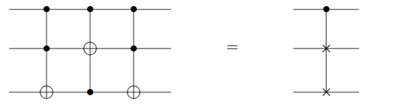
Identidades de Circuitos#
Esta seção reúne algumas propriedades das portas lógicas quânticas vistas anteriormente. Também são apresentadas identidades úteis para se manipular circuitos quânticos.
Identidades para as matrizes de Pauli#
Valem as seguintes relações para as matrizes de Pauli \(X\), \(Y\) e \(Z\).
Prova
Matrizes de Pauli na base \(\ket{+},\ket{-}\)#
Fazendo-se a mudança de base de \(\ket{0},\ket{1}\) para \(\ket{+},\ket{-}\) por meio da matriz \(H\), obtém-se para as matrizes de Pauli:
Portanto, na nova base \(\ket{+},\ket{-}\), a matriz do operador \(X\) é \(Z\), a matriz de \(Y\) é \(-Y\) e a matriz de \(Z\) é \(X\).
Prova
Inversa de Hadamard#
A porta de Hadamard é sua própria inversa.
Pode-se verificar fazendo a conta com matrizes diretamente.
Outra maneira de se verificar isso é perceber que \(H\) é hermitiana (\(H^\dagger = H\)) e unitária (\(H^{-1} = H^\dagger\)), de forma que \(H^{-1} = H^\dagger = H\).
Relação entre as portas \(S\) e \(T\)#
As portas CNOT e SWAP são suas próprias inversas. CNOT^2 = SWAP^2 = I
CNOT por Z#
A porta CNOT pode ser obtida usando-se uma porta \(Z\) controlada:
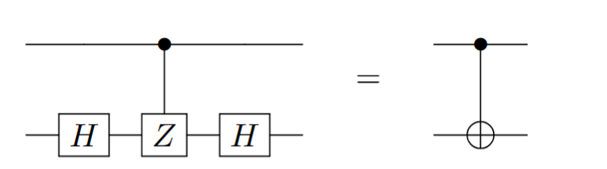
SWAP por CNOT#
A porta SWAP pode ser construída por 3 portas CNOT:
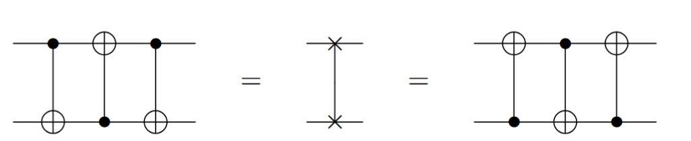
Universalidade das Portas Lógicas Quânticas#
É útil saber quais conjuntos de portas lógicas quânticas permitem reproduzir qualquer operação unitária \(U\) em \(n\) qubits. Essa questão é conhecida como \emph{universalidade} de um conjunto de portas lógicas quânticas. A universalidade pode ter um sentido estrito – isto é, uma operação \(U\) qualquer pode ser implementada exatamente com um número finito portas lógicas – ou um sentido amplo – isto é, a operação \(U\) pode ser aproximada, permitindo-se um erro \(\varepsilon\) arbitrado, por uma sequência finita de portas lógicas (cujo número é função do erro \(\varepsilon\) máximo estipulado).
Universalidade de Portas Lógicas na Computação Clássica Reversível#
Na Computação Clássica Reversível, as funções booleanas têm o mesmo número de bits na entrada e saída, e as portas lógicas são reversíveis (isto é, conhecendo-se a saída, é possível determinar a entrada que a originou). As portas lógicas NOT, CNOT, SWAP, Toffoli e Fredkin, quando trabalhando apenas com bits e não qubits, são exemplos de portas lógicas clássicas reversíveis.
Teorema 1: A porta Toffoli é universal para a Computação Clássica.
É possível realizar as portas NOT e AND utilizando a porta Toffoli e acrescentando alguns bits de trabalho (bits com valor fixado em 0 ou 1 dependendo da necessidade).
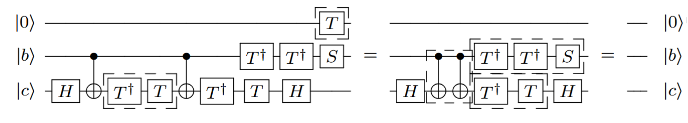
Com isso, um circuito booleano qualquer pode ser realizado apenas com portas Toffoli ignorando-se bits extra (``lixo’’).
Teorema 2: A porta Fredkin é universal para a Computação Clássica.
Da mesma forma como para a porta Toffoli, é possível realizar as portas NOT e AND utilizando a porta Fredkin e acrescentando alquns bits de trabalho.
Com isso, um circuito booleano qualquer pode ser realizado apenas com portas Fredkin ignorando-se bits extra (``lixo’’).
Universalidade de Portas Lógicas na Computação Quântica#
Como as portas Toffoli e Fredkin da Computação Clássica têm análogos quânticos, e tendo em vista a universalidade dessas portas na Computação Clássica, tem-se que a Computação Quântica engloba a Computação Clássica quando lança-se mão de qubits de trabalho e ignoram-se os qubits ``lixo’’
É possível verificar que, para a Computação Quântica, todas as portas lógicas de 1 qubit e a porta CNOT formam um conjunto universal no sentido estrito (ou seja, capaz de produzir exatamente, em princípio, qualquer transformação unitária)
O conjunto finito de operações \(X\), \(Y\), \(Z\), \(H\), \(T\), \(S\), e CNOT também é universal, agora no sentido amplo (isto é, capaz apenas de aproximar uma operação unitária geral dentro de uma faixa de erro pré-determinada). Esse conjunto não é mínimo, pois algumas dessas portas de 1 qubit podem ser obtidas das demais. Por exemplo: \(S = T^2\), \(Z=HXH = S^2\), \(Y = -iZX\).
As portas lógicas quânticas Toffoli e Hadamard formam um conjunto universal capaz de aproximar qualquer matriz unitária com coeficientes reais. Com o uso de um qubit extra, de trabalho, é possível realizar operações unitárias gerais em função de matrizes unitárias com coeficientes reais
O assunto de universalidade de portas lógicas quânticas está em desenvolvimento. Não se conhece um algoritmo ou método eficiente capaz de decompor uma matriz unitária \(U\) em fatores de um dado conjunto universal. A maioria dos conjuntos finitos que foram provados universais têm suas demonstrações baseadas em argumentos de existência: mostra-se que existe uma sequência de portas que aproxima dentro de um erro dado a porta \(U\), mas não se sabe como encontrar essa aproximação. Para a universalidade de todas as portas de 1 qubit mais a CNOT, a prova é construtiva, mas recorre à disponibilidade de qualquer porta de 1 qubit, além de não ser eficiente em geral (isto é, requerer um número de portas lógicas exponencial no número de qubits \(n\)).
Teorema da Não-Clonagem#
Um bit clássico pode ser copiado para servir como entrada em diversas partes de um circuito digital clássico.
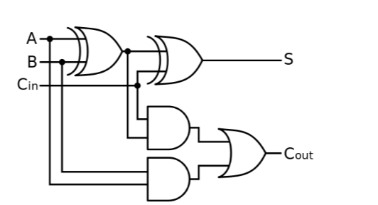
Pode-se pensar nesse comportamento em termos da porta lógica clássica COPY que devolve à saída duas (ou mais) cópias do bit de entrada.
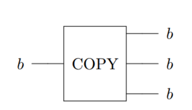
omo na Computação Quântica, o análogo das portas lógicas seriam as operações unitárias sobre qubits, poderia-se cogitar a existência de uma porta lógica quântica de 2 qubits que tivesse como entrada um qubit num estado \(\ket{\psi}\) qualquer, a ser copiado, (e outra entrada \(\ket{0}\) para completar 2 entradas) e devolvesse 2 qubits no estado \(\ket{\psi}\), como ilustrado na figura a seguir.
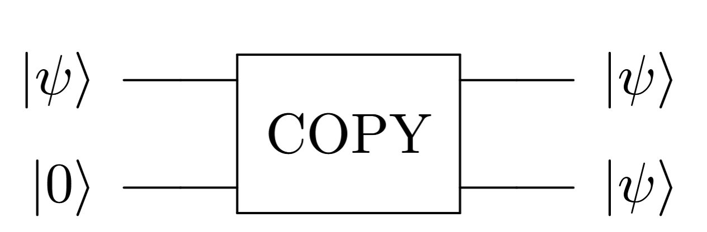
No entanto, o chamado Teorema da Não Clonagem informa que não existe uma operação unitária capaz de efetuar essa operação para qualquer estado \(\ket{\psi}\) de entrada. Desse modo, a cópia de bits não possui análogo na Computação Quântica.
Teorema da Não Clonagem: Não existe uma operação unitária que permita copiar o estado de 1 qubit em 2 (ou mais) qubits. Isto é, não existe operação unitária \(U\) que satisfaça, para todo estado \(\ket{\psi}\) de 1 qubit, o seguinte:
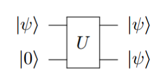
Prova:
A prova se dá por redução ao absurdo. Seja \(U\) uma tal operação unitária, satisfazendo \(U\ket{\psi}\ket{0} = \ket{\psi}\ket{\psi}\) para todo estado \(\ket{\psi}\) com \(||\ket{\psi}|| = 1\).
Considere os estados de 1 qubit \(\ket{1}\) e \(\ket{+}\). Tem-se que
Por outro lado, como \(U\) é unitária, também vale que
Comparando (1) e (2), tem-se que: \(\frac{1}{\sqrt{2}} = \frac{1}{\sqrt{2}} \cdot \frac{1}{\sqrt{2}} \),
O que não pode ocorrer. Portanto a hipótese de que existe \(U\) como descrito acima é falsa.
É possível generalizar essa demonstração para mostrar que não existe operação unitária \(U\) tal que \(U\ket{\psi}\ket{s} = \ket{\psi}\ket{\psi}\) para todo estado \(\ket{\psi}\), e com \(\ket{s}\) um estado fixo qualquer
Apesar de não ser possível clonar um estado arbitrário, é possível copiar estados na base computacional. De fato, uma porta CNOT é suficiente para realizar isso.
Proposição: Clonagem de estados \(\ket{0},\ket{1}\)
O circuito abaixo realiza a clonagem de estados da base computacional. Se \(a = 0,1\), tem-se:
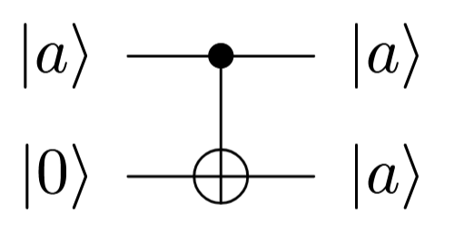
Prova:
Segue do comportamento da porta CNOT nos vetores da base computacional: